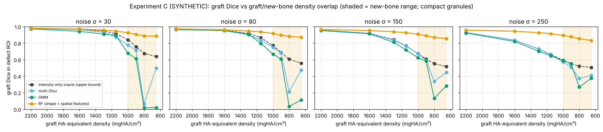

Science
What the software measures, and how it decides whether it can
This page defines the endpoints, explains why residual graft and new bone are often not separable on micro-CT, sets out the advisor’s decision rules, and lists every result to date. Synthetic and real-data results are kept in separate tables; each row links to its result file.
Endpoints
One definition per number
Volumes are voxel counts × voxel volume inside the defect ROI (no sub-voxel partial-volume correction). Labels: new bone (NB), residual graft (RG), host bone (HB), non-mineral, and uncertain (model confidence below τ = 0.6). The specimen (animal) is the experimental unit; voxels are never treated as replicates. Nomenclature follows Bouxsein et al. 2010 where an equivalent exists; graft endpoints have no standard definition and are defined here.
| Endpoint | Definition | Unit | Reported when |
|---|---|---|---|
| Total mineral volume | V(NB) + V(RG) in the ROI; needs no graft/new-bone separation | mm³ | Noise < 0.35 of the bone–soft-tissue contrast and new bone separable from soft tissue |
| Mineralised fraction | (V(NB) + V(RG) + V(HB in ROI)) / TV | – | As above |
| New-bone volume and fraction | V(NB); V(NB)/TV (uncertain voxels count as not new bone) and V(NB)/TVcertain | mm³, – | Advisor status is not “not supported” |
| Residual-graft volume and fraction | V(RG); V(RG)/TV and V(RG)/TVcertain | mm³, – | Advisor status is not “not supported”; refused below 5% graft share of mineral |
| Graft resorption | 1 − V(RG, t) / V(RG, day 0) | – | Registered day-0 scan that passes registration QC, and support |
| Bridging | Fraction of ROI cross-sections along the defect axis with a connected mineral path host to host | – | All mineral: always; new bone only: if new bone is supported |
| Radial ingrowth | New-bone fraction in concentric shells from the ROI boundary (shell width max(200 µm, 4 voxels)) | – | New bone supported |
| BV/TV, Tb.Th, Tb.Sp, Tb.N, Conn.D, BS/BV | Architecture of new bone in the ROI; Tb.Th by sphere fitting (Hildebrand–Rüegsegger), border convention edge; Tb.N = 1/(Tb.Th + Tb.Sp); Conn.D from the 26-connected Euler characteristic | –, µm, 1/mm, 1/mm³ | New bone supported and typical structures span ≥3 voxels (about 150 µm woven trabeculae) |
| Tissue mineral density | Mean density of a class | mgHA/cm³ | Only with an HA-phantom calibration; otherwise grey values are reported as uncalibrated |
Source: docs/science/ENDPOINT_DEFINITIONS.md · analyst explainer: docs/user/SCIENTIFIC_METHODS.md
Separability
When a threshold can, and cannot, tell graft from new bone
Graft and new bone are both mineral. Contrast exists only when the graft differs from bone mineral in density or chemistry; new bone is a moving target whose density rises as it matures; and partial-volume mixing gives every interface intermediate grey values. The intensity-only oracle is the best any voxel-wise intensity rule can do given the true class distributions: if the oracle fails, every threshold workflow fails.

Measurement-support advisor 1.2.1
Decide before reporting
The advisor works in relative mineral units, r = (x − soft tissue) / (host bone − soft tissue), estimated from the scan outside the defect, so it does not need an HA calibration. It models the graft from the material profile (or from measured samples), new bone as a maturity range (0.60–1.00 of host by default), adds the scan’s noise and partial-volume mixing, and evaluates the threshold rule that would actually be applied.
Every assessment records advisor_version. The thresholds (0.85, ±10%, 0.35, 200 µm) are policy choices, frozen for the first real-data evaluation and to be revisited with real data.
Sources: MEASUREMENT_SUPPORT.md, osteoquant/advisor/separability.py
- Mineral endpoints are supported when noise is below 0.35 of the bone–soft-tissue contrast and new bone is separable from soft tissue, including partial-volume halos around dense phases (rule added in 1.2.0).
- Radiolucent grafts (collagen, PLGA, PCL): graft endpoints not supported (invisible); new-bone endpoints supported on condition that the graft has no mineral phase.
- Intensity mechanism: the single-threshold rule must give graft Dice ≥0.85 and a graft-volume ratio within ±10%, both at the graft share estimated from the scan and at half of it. Below 5% graft share, graft volume is refused as “trace residual graft”.
- Bone-derived grafts (autograft, allograft, DBBM): never supported by intensity, even with measured samples. DBM: new-bone endpoints refused too (1.2.1).
- Day-0 mechanism: if intensity fails, a registered day-0 scan that passes registration QC, with granule motion within 200 µm or tracked with ≤20% untracked graft, gives supported with conditions. All four day-0 fields must be computed by the software.
- Texture models only with material-specific validation evidence in the model card. None exists yet.
- Unknown materials are not supported until characterised; measured reference samples need ≥500 voxels. Metals (Mg, Ti) are never supported.
- Density only with HA calibration.
Per material
What the advisor decides, material by material
Illustrative output of advisor 1.2.1 for one scan setting: noise 0.08 of the bone–soft-tissue contrast, 20 µm voxels, residual graft 30% of mineral. Real decisions are computed per scan and change with noise, voxel size and graft share (for example, BCP and 45S5 glass lose support at noise 0.25). Material profiles combine NIST attenuation physics with assumed porosity and granule size; none is measured yet.
- Supported
- With conditions
- Not supported
| Material | Graft & new-bone endpoints, single scan | With a registered day-0 scan | Main reason |
|---|---|---|---|
| Sintered HA, BCP | Supported | Supported | Dense ceramic reads well above bone at this noise |
| Bioactive glass 45S5, S53P4 | Supported | Supported | Brighter than bone, but contrast is energy-dependent: thresholds do not transfer across kVp |
| β-TCP | Not supported | Conditions | Fails the volume or half-share requirement; bone formed inside the footprint is counted as graft |
| Calcium sulfate | Not supported | Conditions | Porous set dihydrate overlaps bone; resorbs within weeks |
| Polymer–ceramic composite | Not supported | Conditions | Composite struts sit in the early-bone density band |
| Allograft, autograft, DBBM xenograft | Not supported | Conditions | Bone-derived: remodels towards bone intensity |
| DBM | Not supported | Not supported | Mineralised DBM particles are indistinguishable from new bone; use histology |
| Collagen sponge, PLGA, PCL | Graft no · new bone conditions | same | Radiolucent: residual graft invisible; mineral attributed to new bone |
| Magnesium, titanium | Not supported | Not supported | Metal artefacts are not modelled |
| Any material not in the knowledge base | Not supported | Not supported | Characterise it first (scan of the material alone or a day-0 scan) |
Total mineral volume was supported for every material at this setting. The day-0 column assumes registration QC passed, graft motion 50 µm and 5% untracked graft; Experiment L3 below shows that this rule is not yet validated even in simulation. Full table and the unsupported-material workflow: docs/user/MATERIALS_AND_SUPPORT.md.
Synthetic Computational phantoms with exact ground truth
Synthetic results: mechanism, not product accuracy
The phantom generator simulates condyle, calvarial and segmental defects with 15 materials and NIST attenuation physics. Granule shape, porosity, resorption and new-bone density are assumptions. Where the advisor and the simulator share the same attenuation model, agreement between them is partly self-consistent.
| Exp. | Question | Result | Source |
|---|---|---|---|
| C | When does density overlap defeat intensity rules? (8 densities × 4 noise levels) | In the overlap regime (800–1000 mgHA/cm³) the intensity-only oracle reaches graft Dice 0.52–0.77; multi-Otsu 0.21–0.75 | exp_Q01 |
| C2 | What lets a feature model beat intensity? | Compact granules: oracle 0.61, random forest with shape 0.86, with spatial features 0.88. Strut-like (bone-like) granules: oracle 0.36, random forest 0.65–0.70. Context helps only when graft morphology differs | exp_C2 |
| B | Three-class 3D U-Net (train 48 / validation 8 / test 16) | Graft Dice 0.918, new bone 0.861, host 0.960. An explicit ROI-context channel gave no benefit (hypothesis not supported) | exp_B |
| L, L2 | Day-0 footprint, best case (graft shrinks in place) | Overlap regime graft Dice 0.915; strut-like granules 0.816 versus random forest 0.663 and intensity oracle 0.323 | exp_L2 |
| L3 | Day-0 footprint with granule displacement and fragmentation (3 seeds per cell) | Naive footprint graft Dice falls from 0.80 with no motion to 0.535 at 50 µm, 0.35 at 100 µm and 0.24 at 200 µm. Granule tracking did not recover it (0.35 at 50 µm). Advisor 1.2.0 refused all 29 failing naive-footprint runs, but supported the tracked footprint in 29 of 30 runs, all 29 of which failed. Skipped registrations were always flagged by QC | exp_L3 |
| L4 | Does registration QC catch harmful misalignment? (n = 33) | All 6 harmful misalignments flagged; 85% of harmless ones passed | exp_L4 |
| F2 | Segmental ROI at a bridged timepoint, propagated from an early scan (16 animals) | Propagated ROI Dice 0.995 (minimum 0.993), registration QC passed 16/16. Automatic detection did not fail in this set-up, so F2 shows accuracy gain, not failure recovery | exp_F2 |
| S1 | Does the advisor refuse the measurements that fail (graft-volume error >20%)? Advisor 1.1.0 | Density × noise sweep, 96 conditions: 54 of 54 failures refused; 12 supported, none failed (upper 95% bound on P(fail | supported) 0.26). 56 dataset specimens: all failures refused, but only 3 of 56 supported, and 47 accurate U-Net measurements were refused | exp_S1 |
| S1b | Using the advisor’s own threshold. Advisor 1.1.0 | Sweep: 52 of 52 failures refused; median graft-volume error of the 12 supported conditions 2.4%. New-bone volume on supported dataset specimens was over-estimated (median error 60%), which led to the mineral rule in advisor 1.2.0 | exp_S1b |
| S1c | Using a measured new-bone reference from a control animal. Advisor 1.1.0 | The advisor supported 24 of 96 conditions and 18 of them failed (P(fail | supported) 0.75); 77% of failures refused. A control-animal reference made the advisor over-confident in this simulation | exp_S1c |
| J | Adapting to a held-out simulated material with few labels | Graft Dice zero-shot 0.843; 1 labelled scan 0.874; 3 scans 0.908. Optimistic: real materials will need more | exp_J |
| K | Uncertainty and failure flags | Deferring the 10% least-confident voxels raised retained accuracy from 0.940 to 0.973. Failure flag (graft Dice <0.8): sensitivity 4/4, specificity 0.75. ID-vs-OOD AUROC 0.66, a weak out-of-distribution detector | exp_K_M |
| E | Scanner gain/offset shift | Random-forest graft Dice drops from 0.962 to 0.810; percentile normalisation restores 0.962 | exp_C_D_E |
| P | Reproducibility | Pipeline labels and metrics, network probabilities, fixed-seed training and format round-trips were bit-identical across runs | exp_P |
Registry with every number: EXPERIMENT_REGISTRY.md. Pre-registered conventions and deviations: docs/science/PREREGISTRATION.md. Note: S1–S1c used advisor 1.1.0 and L3 used 1.2.0; none has yet been re-run with the current 1.2.1.
Real public data CC-BY-4.0 datasets
Real data: morphometry, bone segmentation and file handling
No public dataset with new-bone / residual-graft / host-bone labels was found. Real-data results therefore cover morphometry, two-class bone segmentation, defect ROI detection and reading real vendor files. The numbers of real specimens are small; confidence intervals are wide or absent.
| Exp. | Data | Result |
|---|---|---|
| G | 8 trabecular cubes with Scanco IPL reference maps (Zenodo 11061947) | Tb.Th ICC(2,1) 0.983 (95% CI 0.912–0.997), mean −2.4%; Tb.Sp ICC(2,1) 0.948, mean −4.1%. The edge border convention was chosen after seeing these 8 cubes; the alternative convention gives ICC 0.61 / 0.55. exp_G |
| H | Dog forelimb micro-CT, 10 training / 5 test scans, bone versus background (Zenodo 24047383) | Dice: Otsu 0.508, GMM 0.607, random forest 0.758, U-Net trained on 10 real scans 0.826 (HD95 1.8 voxels). exp_H_I |
| I | Same, synthetic-to-real transfer | Synthetic U-Net zero-shot 0.379 (domain gap); + 1 real labelled scan 0.787; + 3 scans 0.781. Never use synthetic-only models on real scans |
| F | Ovine distraction callus, Zeiss TXM, 2 scans (Zenodo 17255310) | Day-18 regenerate found with confidence 0.56 and flagged for review; day-161 scan correctly returned as an exception (consolidated regenerate, saturated hardware). True voxel size 24.6 µm. exp_F |
| R11 | Same scans, classical thresholds | Without excluding out-of-field padding and metal, new-bone fraction read 1.00; with exclusion 0.21. Defect found and fixed |
| O | 2.1 GB TXM (1.04 G voxels); 829-slice DICOM | TXM streamed to chunked Zarr in 11 s at 386 MB peak; DICOM read in 5.1 s (previously out of memory); U-Net about 49k voxels/s on 4 CPUs. exp_O |
| N | NuInsSeg H&E nuclei (tuned on 10, evaluated on 60) | Classical nuclei detection: object F1 0.34, below published deep-learning tools; not offered. exp_N |

Assumption
Parameters that are not measurements
- Graft microporosity (HA 30%, β-TCP 60%, BCP 50%, CaSO₄ 35%, 45S5 40%) and granule morphology. Granule shape drives the separability results.
- Woven-bone mineral 650–1000 mgHA/cm³ by maturity, anchored to a published callus threshold.
- Resorption rates and patterns; creeping substitution.
- Reviewer effort of 20 s per slice versus 90 s manual. The “≈78% time saving” of Experiment M is a model output from these assumed constants, not a measurement, and is not claimed.
Source: SCIENTIFIC_EVIDENCE.md §5, EVIDENCE_LEDGER.md G2-002
Open problems
What is not solved
- No real three-class truth. Separation of graft from new bone on real material is unknown.
- Synthetic-to-real gap. Synthetic-only models fail on real scans (Dice 0.379 above).
- Day-0 under motion. Footprint accuracy collapses with tens of micrometres of granule motion (L3), tracking does not yet fix it, and the advisor’s day-0 rule was over-confident there. Bone formed inside a resorbing footprint is counted as graft.
- Measured references. In S1c a control-animal reference made the advisor over-confident.
- Out-of-distribution detection is weak (AUROC 0.66). Ensembles and conformal volume intervals (U1), the synthetic-to-real campaign (S2) and the ONNX runtime benchmark (O2) have not completed.